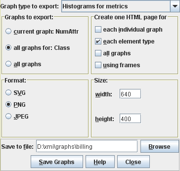

Contents > 4 The SDMetrics User Interface > 4.15 Exporting Data > 4.15.2 Exporting Graphs
4.15.2 Exporting Graphs
Figure 24 shows the export dialog for graphs:

Figure 24: Export Graphs Dialog
The options for the graph export are:
Graph type to export You can export one of the three available
graph types at a time:
- Histograms for metrics
- Cumulative distribution graphs for metrics
- Kiviat graphs for design elements
Graphs to export determines for which metrics or elements you
wish to export graphs. You have the following choices:
- Current graph: <name> exports only the graph for the
metric currently shown in the metric browser (or element in the
element browser); the name of that metric or element is shown next to
the option.
- All graphs for: <type name> exports the graphs for all
metrics or elements of the currently selected element type; the element
type name is shown next to the option.
- All graphs exports the graphs for all element types.
Create one HTML page for You can additionally create HTML pages
that contain the exported graphs:
- each individual graph creates, for each exported graph, one
HTML page that shows the graph.
- each element type creates for each element type one HTML
page that shows all the graphs for that element type (e.g., a page
with all class metric diagrams and so on).
- all graphs creates one HTML page that shows all the graphs
- using frames - Select this option if you want the HTML pages
that show multiple graphs be organized in frames.
Format You can choose between the following file formats for
the exported graphs:
- SVG - Scalable Vector Graphics
- PNG - Portable Network Graphics
- JPG images
Size Here you can specify the width and height of the graphs,
in pixels.
Save to file: Specify a file base name for the graph and HTML
files to be written. SDMetrics will extend the base name with element
type names, metric names, and the proper file extension. For example,
if you specify the base name "C:\graphs\model", exporting all graphs
will generate files named "C:\graphs\model_Class_NumOps.svg",
"C:\graphs\model_Package.html", and so on.
Finally, to export the graph(s) as specified above, press the "Save
graphs" button. The "Close" button closes the dialog without exporting
the graphs.
Note that exporting a large number of graphs in PNG or JPG format can
take some time, you can monitor the progress on the status bar of the
main window.
| Prev |
Up |
Next |
| Section 4.15.1 "Exporting Data Tables" | Contents | Section 4.16 "Setting Preferences" |